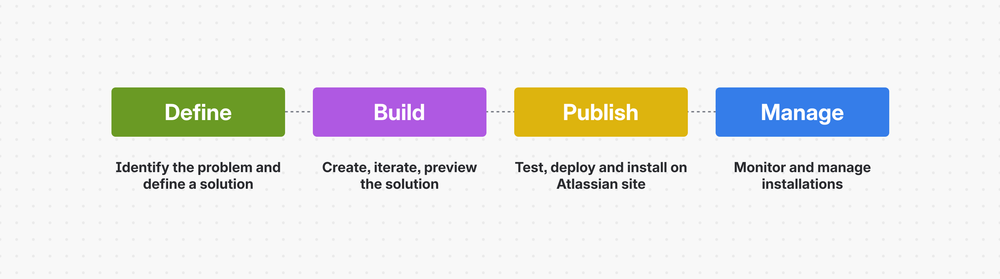
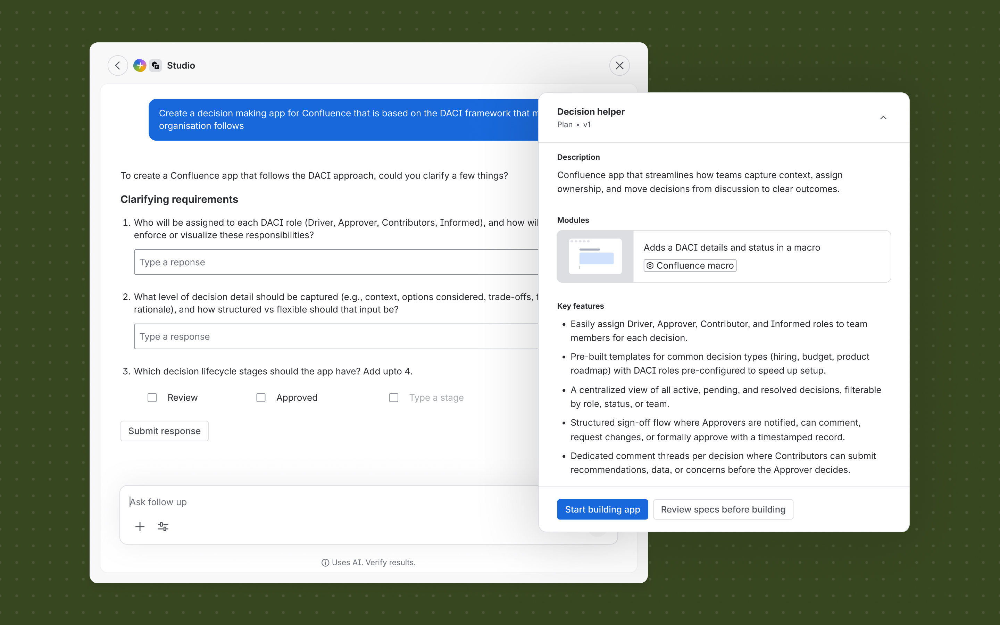
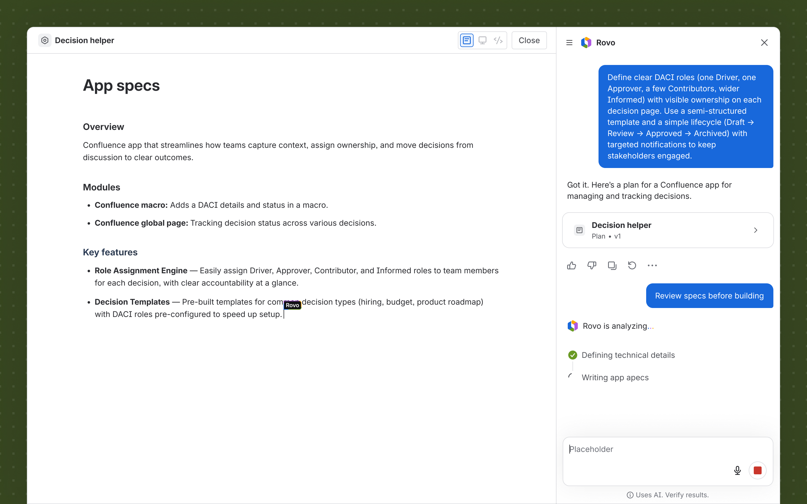
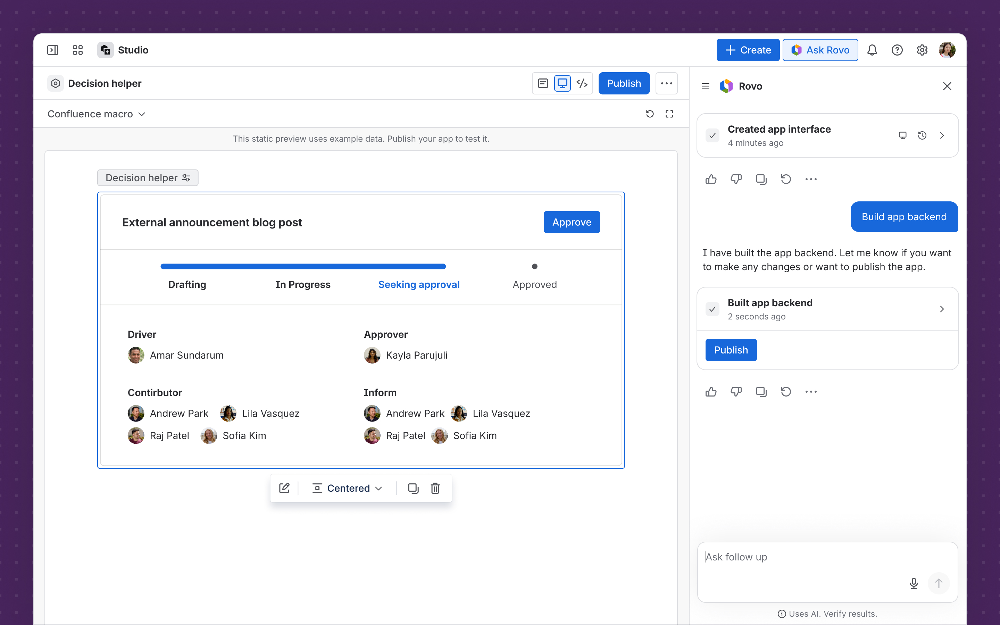
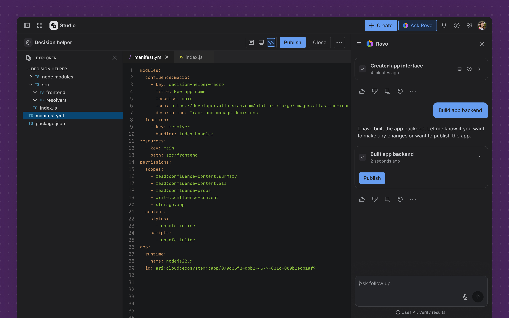
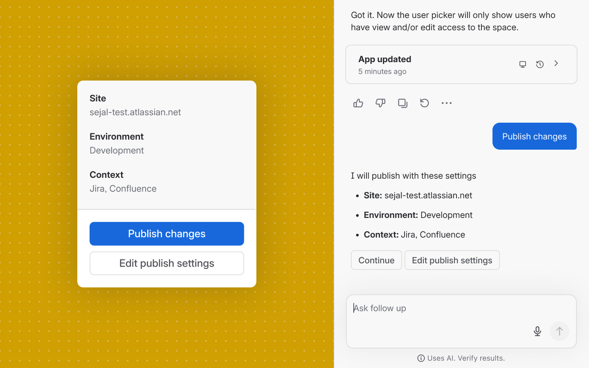
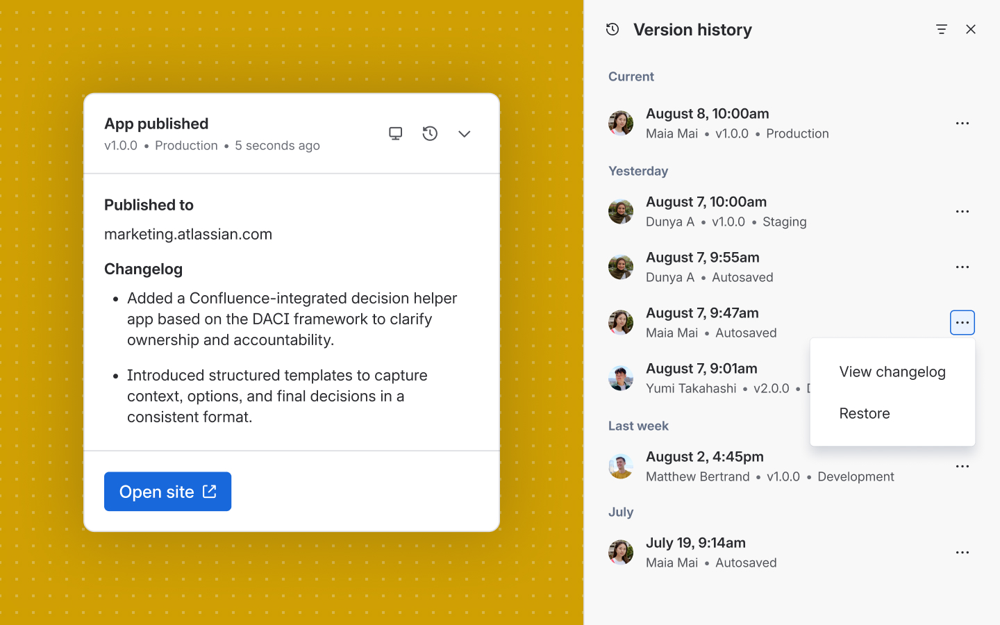
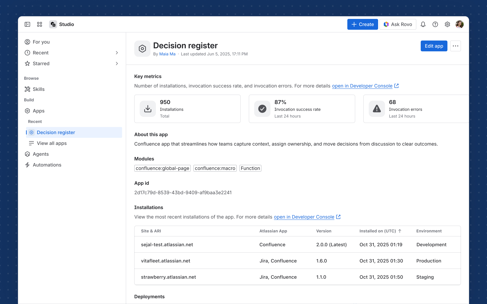

Rovo Studio is Atlassian's AI-assisted builder product for building various enterprise-grade platform solutions like Apps, Agents, Automations, using natural language prompts. With AI, barrier to building is getting lower and coding is becoming more accessible. Our mission was to unleash the potential of every team and all builders – pro-developers or non-technical users, empowering them to build and customise their Atlassian experience, by providing them AI powered building tools.

We started with a broad northstar vision, envisioning the key builder experience all the objects – apps, agents and automations. Post defining a northstar, I translated that vision into end to end experiences, based on our product milestones. I defined and mapped the e2e builder journey – from identifying a problem they want to solve and building the solution through to publishing the app and monitoring post publishing. In the AI-assisted journey, each of these phases had a specialised Agent behind the scenes, to guide and action what the user intends to do.

The key task builder begins with is to find the best way to solve a problem they've identified to extend or customise their Atlassian experience.
Explored and defined how solution architect agent, the first agent user interacts with, shows up in Studio to idenitfy, define and refine the solution with the user.
Explored and defined how user expands from chat based AI assistance to using rich editable artifacts for complex set of instructions for the agent. I also shaped the content structure for these artifacts alongside content lead.
Refined the AI create pattern used across Atlassian products in collaboration with the Principal Designer and AI Design System team, to bridge the gaps in the existing pattern and evolve for the Studio context.


Once the builder is happy with the app plan and specs, they proceed with building the app. Rovo sets up the app project, adds the right app permissions and writes the app frontend and backend code. Builders can preview and keep iterating on the version 0 generated by Rovo.
I defined the canvas chrome and navigation for apps, and co-leading shared chrome and nav patterns that scale to all Studio objects like agents and automations.
With 60+ (and growing) extension points, showing up in various parts of Jira, Confluence and other Atlassian products, I explored how might we present the embedded app experiences in more meaningful than just presenting a context-less iframe.
We started with the first milestone for Studio to be no-code only, and I started looking at how might we expand to low-code and pro-code pathways focussing on two aspects – access to the app code, and ability to view and edit in Studio.


Once the user is ready to testing and publishing the app, Rovo goes through the technical steps of ensuring the code is tested, app is functional and deploys the code to user's preferred environment and installs to selected site.
Publishing app is 2 step process - deploy and install. This is designed for deployer and installer often being different people on the opposite ends of the ecosystem. Defined a new publish experience to the cater to new AI powered building needs, which makes publishing to production faster without compromising on the transparency and controls required for production grade apps.
Forge app versioning has various aspects – from local versioning, linked chat versions to deployment versions. Defining the app versioning aspects and logic, creating a conceptual map and systems thinking view of how these various versioning map and show up in Studio for reliable versioning system and controls.


Post publishing, builder can track my app’s installations and deployments across their organisation. With the evovling state of AI, Studio and Atlassian's pro-developer observability tool Developer Console, I was contributing to the broader and long term strategy the holistic observability vision for apps. While these were still under discussion, I defined an launch ready experience which is scalable as the strategy and product evolves.
